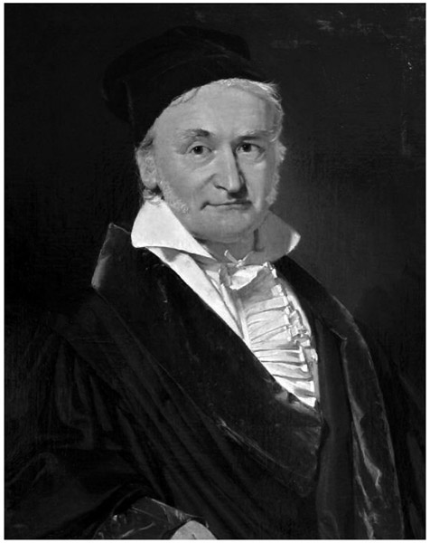
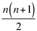
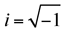
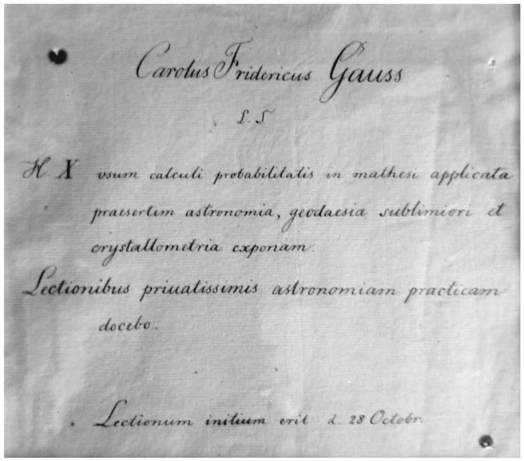
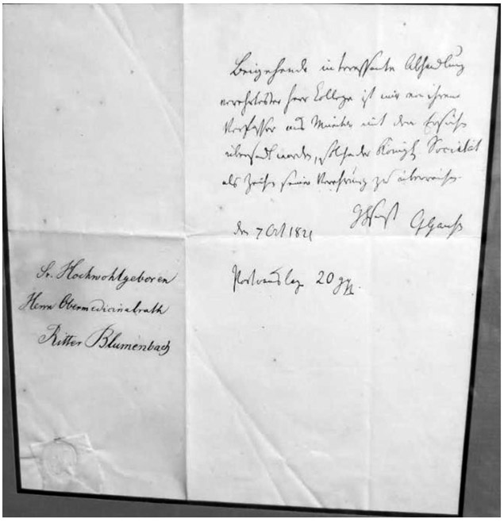
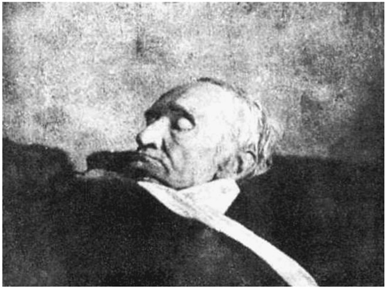

Carl Friedrich Gauss: German (1777–1855)
It is not easy to summarize the seventy-eight-year-long life of one of the greatest mathematicians of all time, but we hope to provide an overview of this great man. Carl Friedrich Gauss was born on April 30, 1777, in Braun-schweig, Germany, in a poor, working-class family (see fig. 29.1). There are many stories of how it was determined early on that Gauss was a child prodigy. It has been said that at the age of three, he was able to find a mistake in his father’s household calculations.
Perhaps the most famous story of Gauss’s prodigious youth is that when he was eight years old, his elementary-school teacher, in an effort to keep the class busy while he did some clerical work, asked the class to add the numbers from 1 to 100. No sooner had he given the assignment than young Gauss put his slate down, indicating that he had arrived at this requested sum. The teacher ignored him so as to let the rest of the class complete the assignment. After a half hour, when the teacher sought the results from his students, Gauss was the only one who had the correct answer. His clever method for finding the sum so quickly was to add the numbers—but not as the rest of class did (1 + 2 + 3 + 4 + 5 + . . . + 98 + 99 + 100). Rather, he added the first and the last numbers (1 + 100 = 101), then he added the second and the next-to-last (2 + 99 = 101), and then he continued along the same pattern (3 + 98 = 101, etc.) until all numbers in the list were coupled. He realized that there were fifty pairs of such additions, and so all he needed to do to get the sum was to multiply 50 by the repeated sum of 101, that is, 50 ∙ 101 = 5,050. This is a story that all good math teachers should be sharing with their students at the appropriate time, that is, when introducing the formula for the sum of an arithmetic sequence.

Figure 29.1. Carl Friedrich Gauss. (Oil on canvas, by Christian Albrecht Jensen, 1840.)
In 1791, when Gauss was fourteen years old, Carl Wilhelm Ferdinand, the duke of Braunschweig, discovered Gauss’s brilliance and offered to finance his study at what is known today as the Braunschweig University of Technology. Upon graduation there, Gauss was admitted to the University of Göttingen, still financially supported by the duke. He studied at Göttingen from 1795 until 1798, whereupon he left without a degree. However, during this period of time, he wrote and published his monumental work, largely on the theory of numbers, Disquisitiones Arithmeticae. Although it was completed in 1798, due to publishing difficulties in Leipzig, it was not published until 1801.
Disquisitiones Arithmeticae is often considered his greatest masterpiece. Even though arithmetic was Gauss’s favorite subject, he also delved into astronomy, geodesy, and electromagnetism—among other fields as well. The book has seven sections; the first three deal with the theory of “congruences,” or as we tend to call it today modular arithmetic. The fourth section deals with the theory of quadratic residues, for which he had an ingenious approach that amazed and impressed many people in his time. The study of quadratic equations continued until the seventh section, which most people consider the highlight of the book. In this section, he discussed the equation x n = 1, where n is a given integer. In his discussion, he combined arithmetic, algebra, and geometry. This equation is the basis for the algebraic approach to the problem of constructing a regular polygon of n sides. This is one of Gauss’s proudest discoveries, namely that a regular polygon of seventeen sides can be constructed using only an unmarked straightedge and a pair of compasses. This was one of the major advances in geometry since the time of famous Greek mathematicians. Gauss often said that he would like to see this seventeen-sided polygon on his gravestone, but the stonemason balked at the suggestion, saying that drawing such a figure would look like a circle with seventeen points on it.
Today we know that a regular polygon of n sides is constructible with an unmarked straightedge and a pair of compasses if n is equal to any of the following: 3, 4, 5, 6, 8, 10, 12, 15, 16, 17, 20, 24, 30, 32, 34, 40, 48, 51, 60, 64, 68, 80, 85, 96, 102, 120, 128, 136, 160, 170, 192, 204, 240, 255, 256, 257, 272, 320, 340, 384, 408, 480, 510, 512, 514, 544, 640, 680, 768, 771, 816, 960, 1020, 1024, 1028, 1088, 1280, 1285, 1360, 1536, 1542, 1632, 1920, 2040, 2048, . . .
We know this because a regular n-gon is constructible with these tools if and only if n = 2k p1p2 . . . p t, where k and t are non-negative integers, and the p i’s (when t > 0) are distinct Fermat primes, which are prime numbers that can be expressed as n 22 +1. The five known Fermat primes are F0 = 3, F1 = 5, F2 = 17, F3 = 257, and F4 = 65537.
After returning to the University of Göttingen, Gauss finally received his first degree in 1799. The duke further requested that Gauss submit a doctoral dissertation to Helmstedt University, whereupon he then received his doctorate. In the years following, he delved in astronomy to help establish an observatory at Göttingen. On October 9, 1805, Gauss married Johanna Osthoff, with whom he had a son and a daughter. His wife died on October 11, 1809, and their second child died shortly thereafter. The following year, Gauss married Minna Waldeck, with whom he had three more children. During this marriage he grew very close to his children. Sadly, his second wife died in 1831.
Returning to Gauss’ academic career, in 1807 he left Brunswick and arrived in Göttingen to assume the position of director of the observatory. The following year there began a series of misfortunes for Gauss. His father died in that year, and this coupled with the death of his wife two years later, caused him to become quite depressed. His production continued despite these unfortunate events. In 1809, he published a two-volume treatise on the motion of celestial bodies. The first of the two volumes covered differential equations, conic sections, and elliptical orbits; the second concentrated on estimating a planet’s orbits.1
In 1818, he accepted the task of developing a geodesic survey of the state of Hanover so that it could then be linked with the Danish grid. Here, once again, his incredible ability to do calculations mentally was a great help. Many of his discoveries seem to have resulted from his ability to do mental calculations far beyond those that an average person can conceive.
One of his discoveries published in Disquisitiones Arithmeticae is an example of this. What is now referred to as Gauss’s Eureka theorem (because he wrote in his diary, “ΕΥΡΗΚΑ! num = Δ + Δ + Δ”)2 is that every positive integer can be expressed as the sum of triangular numbers. Triangular numbers are 0, 1, 3, 6, 10, 15, . . ., and they can be expressed as n

. For example, 18 = 15 + 3, and 28 = 15 + 10 + 3.Another of Gauss’s discoveries was that he proved what is today referred to as the fundamental theorem of algebra. In simple terms, it states that every algebraic equation in one variable has a root, or an answer. These roots can either be real or complex, and so Gauss used the notation of a + bi, where

. Furthermore, Gauss was the first to give a comprehensive explanation of complex numbers and their labeling as points on the plane with Cartesian coordinates.For these reasons among many others, Gauss was considered one of the most brilliant mathematicians of his time. In 1816, the Paris Academy offered a prize for anyone who could prove Fermat’s Last Theorem in the period 1816–1818. Gauss was urged to compete, but he wrote to a friend that “Fermat’s Last Theorem as an isolated proposition has very little interest for me, because I could easily lay down a multitude of such propositions, one could neither prove nor dispose of.”3 As you might recall, Fermat’s Last Theorem states that no three positive integers a, b, and c can satisfy the equation a n + b n = c n for any value of n greater than 2. It took 358 years until the British mathematician Andrew Wiles published the proof in 1995.)
It was well known that Gauss did not enjoy teaching; however, on occasion, he did announce a lecture or teach private lessons. For instance, see the announcement from 1831 in figure 29.2, where he stated, “at 10 o’clock I will explain the use of probability calculus in applied mathematics, especially astronomy, advanced geodesy and crystallometry. I will teach practical astronomy in most private sessions. The first lecture will be on October 28th.” Latin was a favorite language for him to use for mathematics and other scientific communication, as evidenced by this announcement.
Gauss endured some additional depressing times between 1817 and 1832, when his mother, who was always very dear to him, became ill and lived with him until she died in 1839.4

Figure 29.2. An 1831 announcement written by Gauss regarding a lecture and private sessions he would be holding in October of that year.
In 1832, Gauss formed a partnership with a leading physicist of his time, Wilhelm Weber (1804–1891). They constructed the first electromagnetic telegraph in 1833. The first connection was between Gauss’s magnetic observatory and the Institute for Physics in Göttingen, Germany. At the prompting of Prussian scientist Alexander von Humboldt, Gauss and Weber determined measurements of Earth’s magnetic field in many regions of the world. At Gauss’s magnetic observatory, they began to modify Humboldt’s procedures, which did not please him. Yet Gauss’s changes were far more effective and accurate. Throughout his life, Gauss was also involved with scientists in the life sciences, such as the famous German physician and anthropologist Johann Friedrich Blumenbach (1752–1840). Their connection is evidenced by a memo Gauss wrote to Blumenbach, shown in figure 29.3. In that memo, written in his hand on October 7, 1821 Gauss states, “Beigehende interessante Abhandlung verehrtester Herr College ist mir von ihrem Verfasser aus München mit dem Ersuchen übersandt worden, solche der Königl. Societät als Zeichen seiner Verehrung zu überreichen.” This can be translated as, “The enclosed interesting treatise, honored Colleague, has been sent to me by its author from Munich with the request that the Royal Society accept it as a token of his reverence.”
In 1837, for political reasons, Weber had to leave Göttingen, after which Gauss’s work gradually became less voluminous, yet he was always eager to support other scientists in their work. Carl Friedrich Gauss died on November 23, 1855, in Göttingen, and he is buried in the Albani Cemetery there.
Perhaps his most famous quote, and one that is often mentioned today is that “Mathematics is the queen of sciences, and arithmetic the queen of mathematics.”

Figure 29.3. A memo from Gauss to Johann Friedrich Blumenbach, dated October 7, 1821.

Figure 29.4. Gauss on this deathbed, 1855. (Painting by Philipp Petri, 1855.)